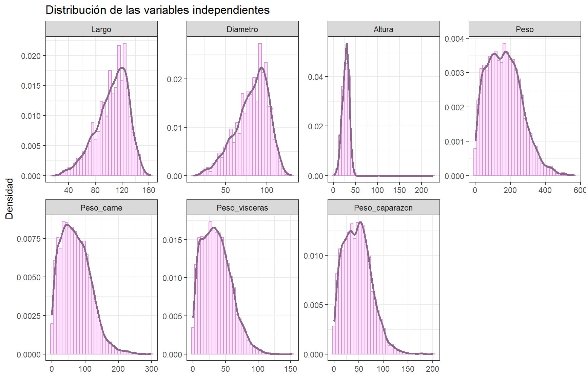
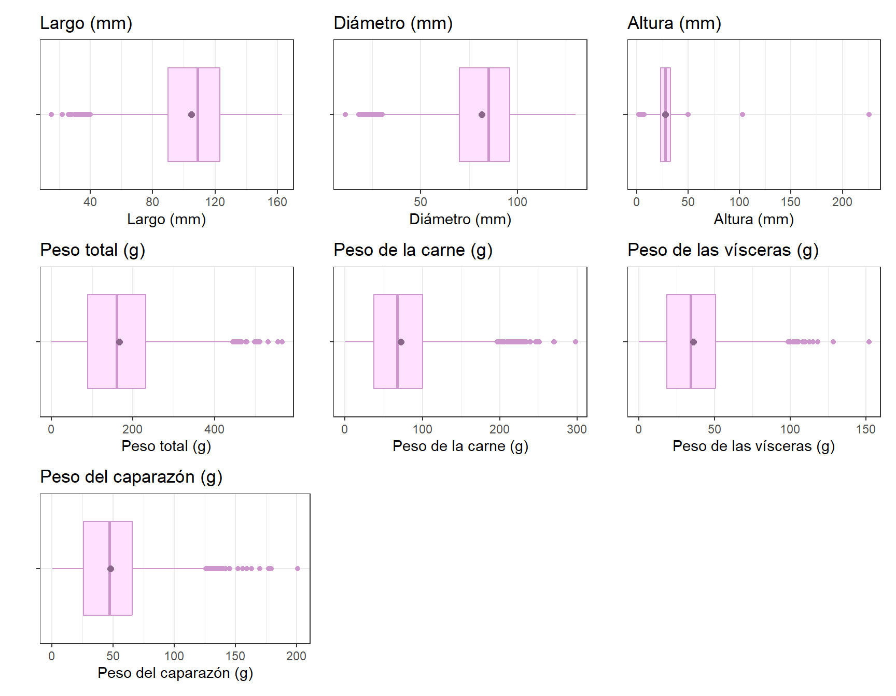
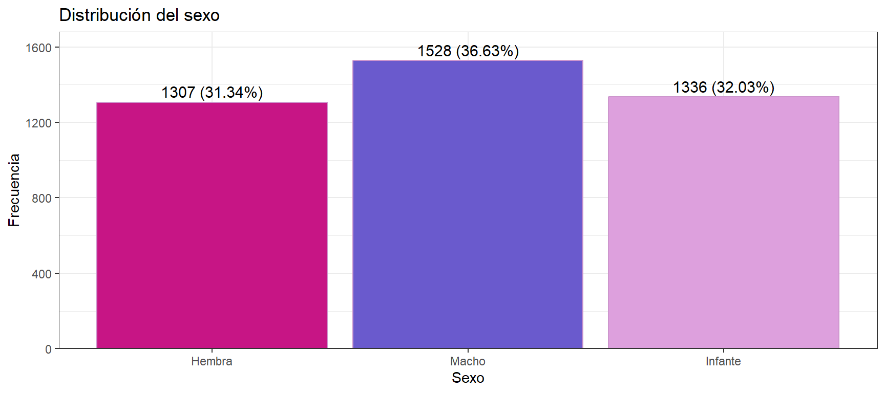

Capitulo 7 Análisis de las variables independientes
7.1 Variables cuantitativas
predictores <- c("Largo", "Diametro", "Altura", "Peso",
"Peso_carne", "Peso_visceras", "Peso_caparazon")
res_x <- abalone %>%
select(all_of(predictores)) %>%
pivot_longer(everything(), names_to = "variable", values_to = "valor") %>%
group_by(variable) %>%
summarise(resumen(valor)) %>%
arrange(match(variable, predictores))
res_x %>% tabla("Medidas descriptivas de las variables independientes")| variable | n | media | sd | mediana | RIC | Q1 | Q3 | minimo | maximo | asimetria | curtosis | atipicos |
|---|---|---|---|---|---|---|---|---|---|---|---|---|
| Largo | 4171 | 104.846 | 23.998 | 109.0 | 33.00 | 90.00 | 123.0 | 15.0 | 163.0 | -0.643 | 3.073 | 49 |
| Diametro | 4171 | 81.615 | 19.830 | 85.0 | 26.00 | 70.00 | 96.0 | 11.0 | 130.0 | -0.612 | 2.962 | 59 |
| Altura | 4171 | 27.928 | 8.340 | 28.0 | 10.00 | 23.00 | 33.0 | 2.0 | 226.0 | 3.173 | 79.903 | 27 |
| Peso | 4171 | 165.934 | 98.023 | 160.1 | 142.25 | 88.55 | 230.8 | 0.4 | 565.1 | 0.530 | 2.977 | 29 |
| Peso_carne | 4171 | 71.895 | 44.407 | 67.2 | 63.30 | 37.20 | 100.5 | 0.2 | 297.6 | 0.718 | 3.591 | 48 |
| Peso_visceras | 4171 | 36.157 | 21.914 | 34.2 | 31.90 | 18.70 | 50.6 | 0.1 | 152.0 | 0.591 | 3.084 | 26 |
| Peso_caparazon | 4171 | 47.800 | 27.834 | 46.8 | 39.80 | 26.00 | 65.8 | 0.3 | 201.0 | 0.621 | 3.532 | 35 |
Interpretación: La tabla presenta las medidas descriptivas de las siete variables independientes, cada una con 4.171 observaciones. Se observa que Largo y Diámetro presentan asimetría negativa, mientras que las demás variables tienen asimetría positiva, especialmente Altura (3.173), que también presenta una curtosis elevada (79.903), indicando una distribución con valores extremos. Además, se identifican valores atípicos en todas las variables, destacándose Largo (49), Diámetro (59) y Peso_carne (48).
abalone %>%
select(all_of(predictores)) %>%
pivot_longer(everything(), names_to = "variable", values_to = "valor") %>%
mutate(variable = factor(variable, levels = predictores)) %>%
ggplot(aes(x = valor)) +
geom_histogram(aes(y = after_stat(density)), bins = 35,
fill = col_fill, color = col_line) +
geom_density(color = col_dark, linewidth = 0.9) +
facet_wrap(~ variable, scales = "free", ncol = 4) +
labs(title = "Distribución de las variables independientes", x = "", y = "Densidad") +
theme_bw()
Interpretación: Los histogramas muestran la distribución de las variables independientes. Se observa que Largo y Diámetro presentan asimetría negativa, con mayor concentración de datos en valores altos. Por otro lado, Altura presenta una fuerte asimetría positiva, debido a la presencia de valores extremos hacia la derecha. Las variables Peso, Peso_carne, Peso_visceras y Peso_caparazon también presentan asimetría positiva, con una mayor concentración de observaciones en valores bajos y medios y una cola extendida hacia los valores altos. En general, se observa que las variables presentan diferentes formas de distribución y no todas siguen un comportamiento simétrico.boxplot_h <- function(var, titulo) {
abalone %>%
ggplot(aes(x = .data[[var]], y = "")) +
geom_boxplot(fill = col_fill, color = col_line) +
stat_summary(fun = mean, geom = "point", shape = 20, size = 3,
color = col_dark, orientation = "y") +
labs(title = titulo, x = titulo, y = "") +
theme_bw()
}
p1 <- boxplot_h("Largo", "Largo (mm)")
p2 <- boxplot_h("Diametro", "Diámetro (mm)")
p3 <- boxplot_h("Altura", "Altura (mm)")
p4 <- boxplot_h("Peso", "Peso total (g)")
p5 <- boxplot_h("Peso_carne", "Peso de la carne (g)")
p6 <- boxplot_h("Peso_visceras", "Peso de las vísceras (g)")
p7 <- boxplot_h("Peso_caparazon", "Peso del caparazón (g)")
(p1 + p2 + p3) / (p4 + p5 + p6) / (p7 + plot_spacer() + plot_spacer())
INTERPRETACIÓN Los diagramas de caja muestran la distribución de las variables independientes y permiten identificar su dispersión y valores atípicos. Se observa que Largo y Diámetro presentan valores atípicos en la parte inferior, mientras que Altura presenta valores extremos hacia la parte superior. Por otro lado, Peso total, Peso de la carne, Peso de las vísceras y Peso del caparazón presentan numerosos valores atípicos en la parte superior, indicando la existencia de algunos abalones con pesos considerablemente elevados respecto al resto.
7.2 Variable categórica Sexo
tab_sexo <- abalone %>%
count(Sexo, name = "n") %>%
mutate(Porcentaje = round(n / sum(n) * 100, 2))
tab_sexo %>% tabla("Frecuencia por sexo", d = 2)| Sexo | n | Porcentaje |
|---|---|---|
| Hembra | 1307 | 31.34 |
| Macho | 1528 | 36.63 |
| Infante | 1336 | 32.03 |
tab_sexo %>%
ggplot(aes(x = Sexo, y = n, fill = Sexo)) +
geom_col(color = col_line, show.legend = FALSE) +
geom_text(aes(label = paste0(n, " (", Porcentaje, "%)")), vjust = -0.4, size = 4) +
scale_fill_manual(values = col_sexo) +
scale_y_continuous(expand = expansion(mult = c(0, 0.1))) +
labs(title = "Distribución del sexo", x = "Sexo", y = "Frecuencia") +
theme_bw()
Interpretación: El gráfico muestra la distribución de los abalones según su sexo. Se observa que los machos presentan la mayor frecuencia, con 1.528 individuos (36.63 %), seguidos de los infantes con 1.336 (32.03 %) y las hembras con 1.307 (31.34 %).